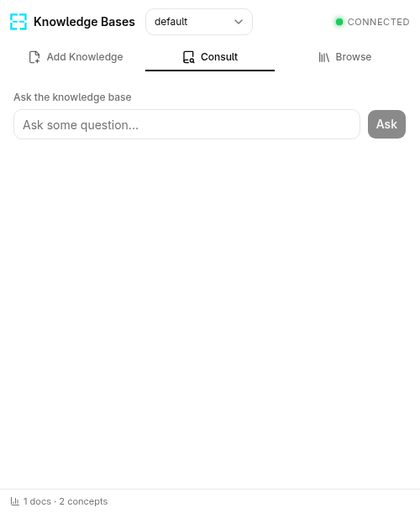
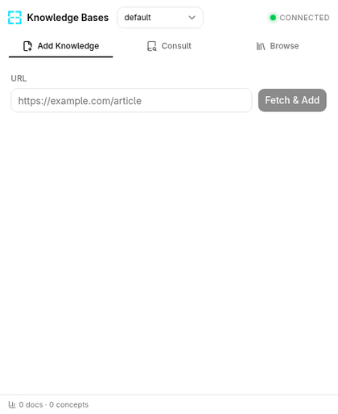
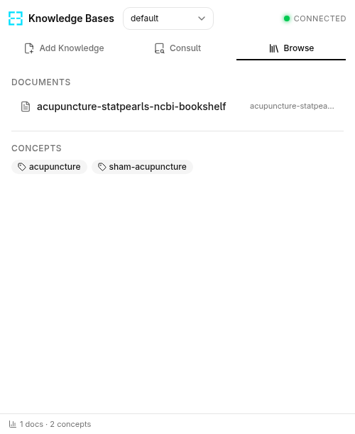

You read hundreds of articles, but remember none of them.
Keb turns every web page into a searchable, connected knowledge base your AI can reason over. Two clicks. Any page. Your personal wiki.

How It Works
Save a page
Right-click any page or paste a URL — done in two clicks.
AI builds your wiki
AI agent extracts concepts and compiles structured, interlinked pages.
Ask anything
Query your knowledge base in natural language and get grounded answers.
3 Simple Tabs
Add Knowledge
Right-click any page and choose "Add to knowledge base". Watch as your LLM compiles summaries and concept pages in real time.
Consult
Ask questions and get streaming AI responses grounded in pages you've saved — with inline source references.
Browse
Explore your personal wiki — summaries, concepts, and source URLs, all cross-linked and searchable.
See It in Action


Why Keb?
Keb
- Two-click capture from any page
- AI-powered Q&A on your saved pages
- Auto-generated wiki with cross-links
- Runs locally — your data, your LLM
Bookmarks
- Saves links only — not content
- No search across page contents
- Flat list, no connections
Notion / Obsidian
- Manual copy-paste required
- No automatic concept extraction
- Separate app, breaks your flow
Stop losing what you read.
Turn your browser into a knowledge base your AI can reason over.
Try Keb — It's Open Source